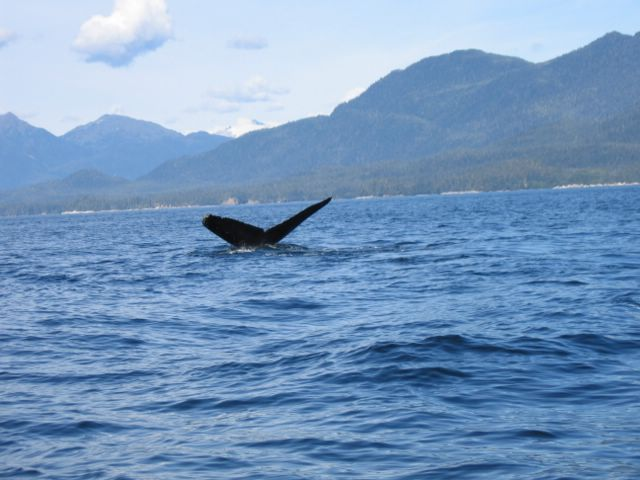

First |
Previous Picture |
Next Picture |
Last |
------------------------------ |
PICTURES HOME |
BORIS HOME

En la parte de atras de la aleta la ballenas
tienen unas marcas unicas en ese animal que las distinguen de otras
ballenas. Como huellas
digitales.
img_0898.jpgtest